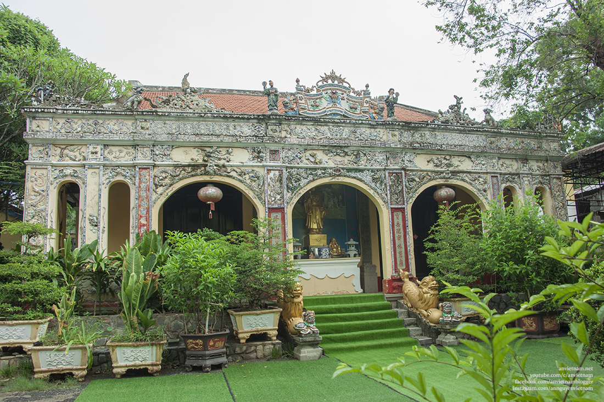

Vị trí:
Chùa Bửu Phong nằm trên ngọn núi Bửu long, TP Biên Hòa, tỉnh Đồng Nai
Đặc Điểm:
Chùa Bửu Phong là ngôi chùa cổ tự rêu phong cổ kính, có những pho tượng với những nét điêu khắc đặc biệt Á Đông